Notable Albany Architecture The Empire State Plaza
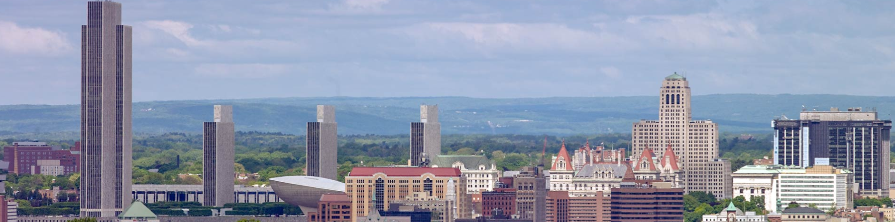
Garden
Entertainment
Colleges
Restaurants
About Albany
Architecture
Picture of the Nelson A. Rockefeller Empire State Plaza
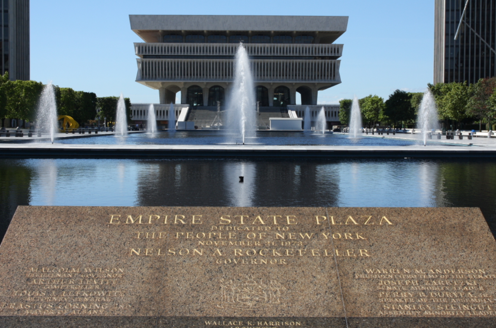
One Commerce Plaza
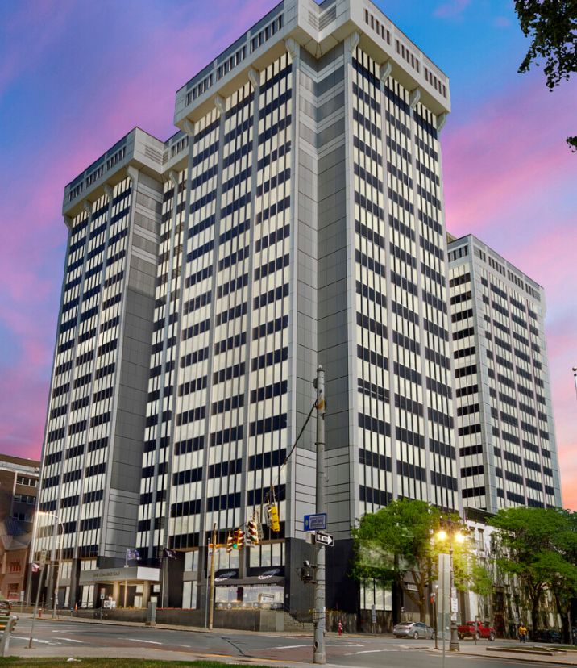
New York State Capitol
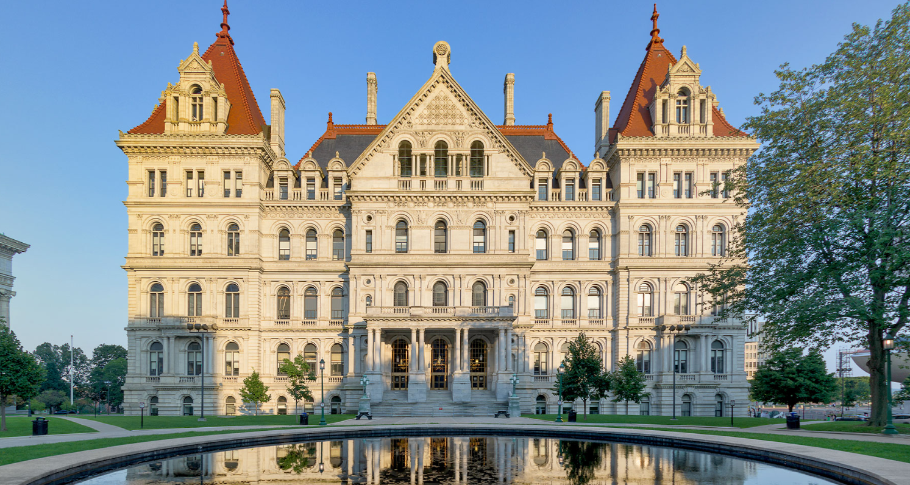
Alfred E. Smith Building
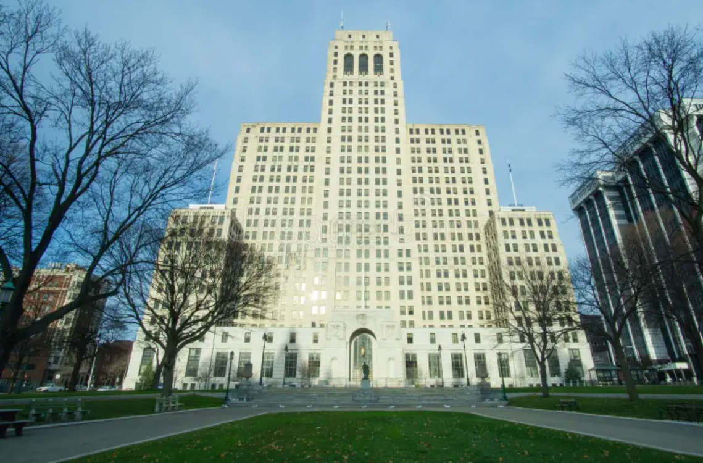
The Egg
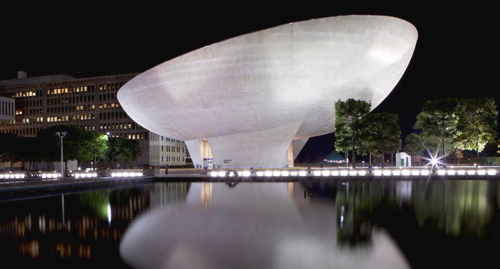
Four Identical Towers
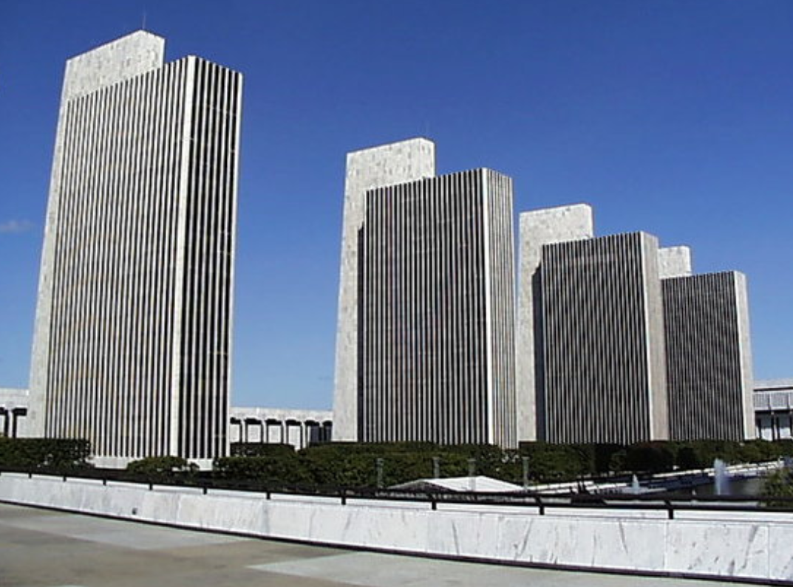
New York State Education Building
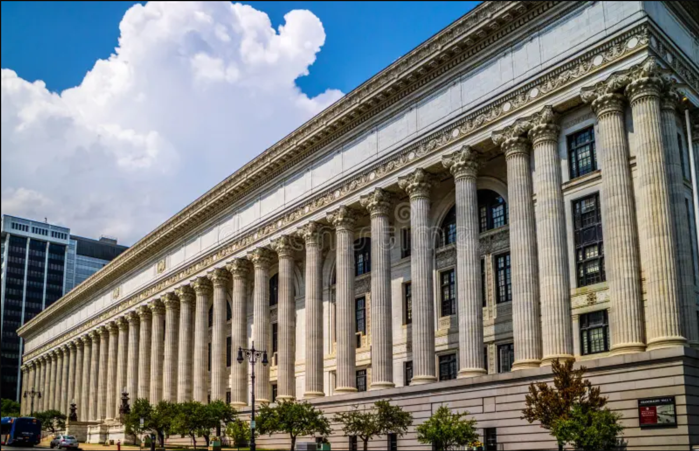
World War 2 Memorial
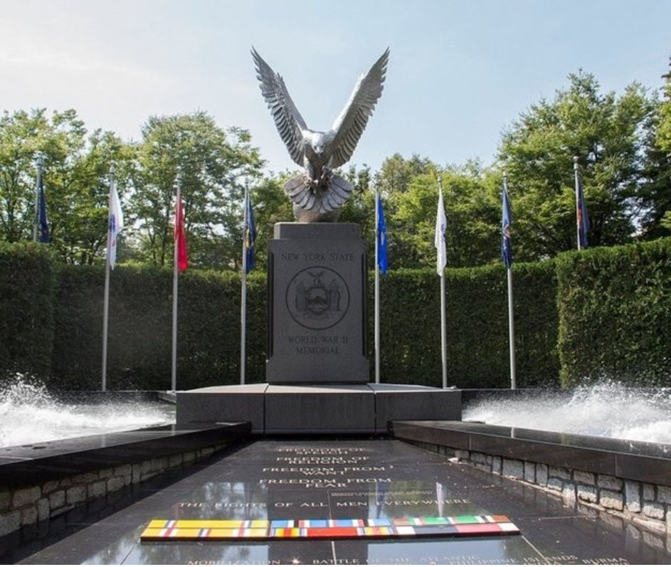
New York Executive Mansion (Governors Mansion)
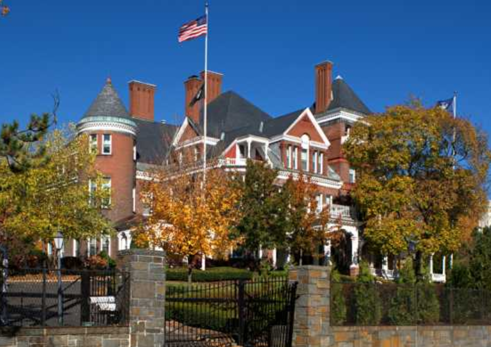
Legislative Office building
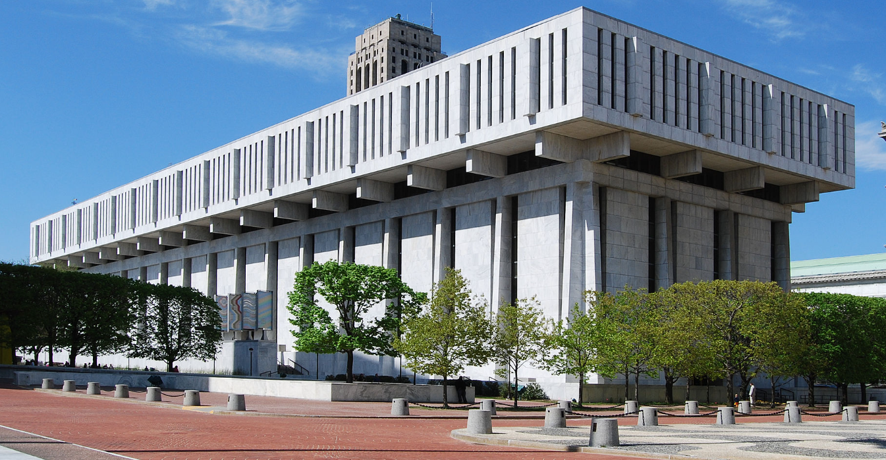